|
WELCOME DINNERでEYE Ball QSO
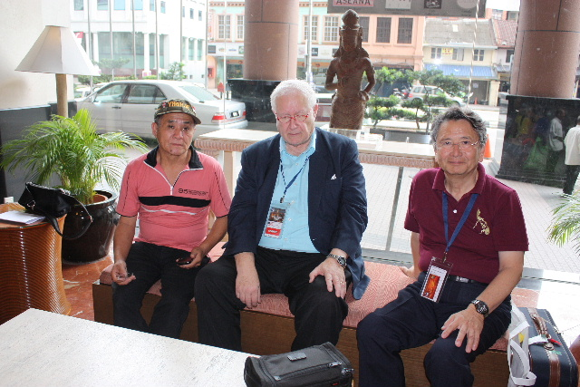
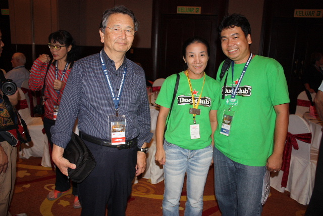
(L)YB6HJE.K3ZO.JA1BRK/(R)JA1BRK.E21EIC & XYL
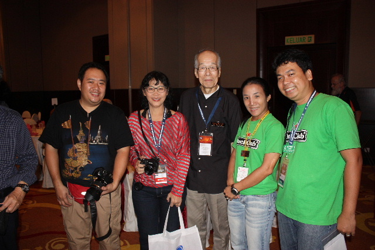
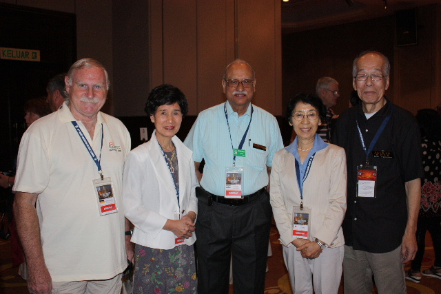
(L)E21EIC夫妻と左へJA1RJU.HS1ASC.9M6
(R)DF5UG.7K3EOP.VU2GMN.JF1WMY.JA1RJU
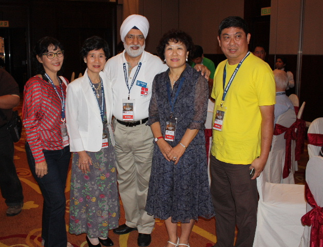
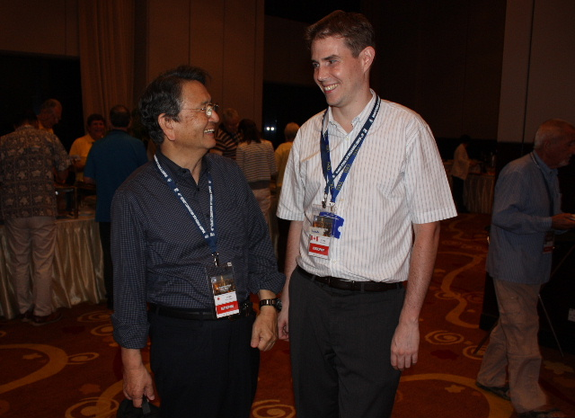
(L)HS1ASC.7K3EOP.9M2KN.HL1KDW./(R)JA1BRK.VE7HSC
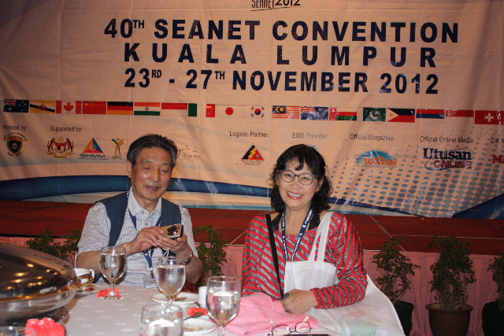
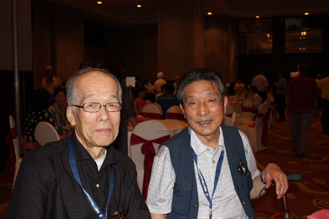
(L)BA4AA.HS1ASC/(R)JA1RJU.BA4AA
GALA PARTY
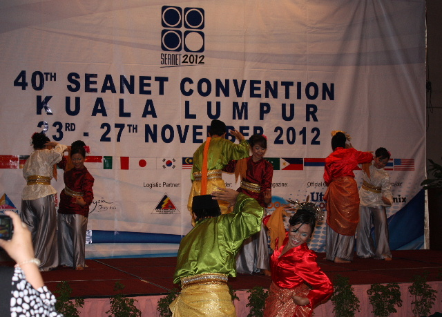
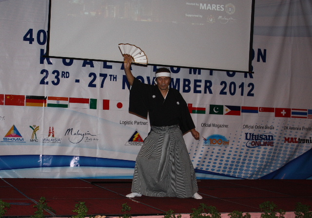
(L)マレーの民族舞踊/(R)SEANET恒例となったJA9AGの剣舞
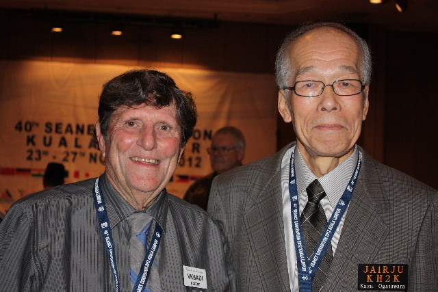
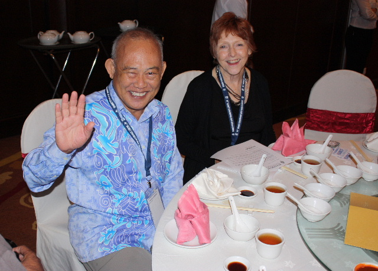
(L)VK6ADI.JA1RJU/(R)9V1OD.WA0WOF
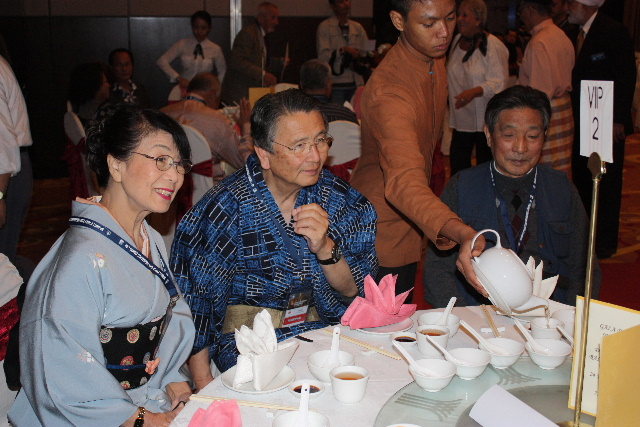
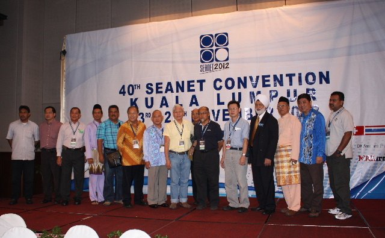
(L)JF1FBE.JA1BRK.BA4AA/(R)9M2'Group
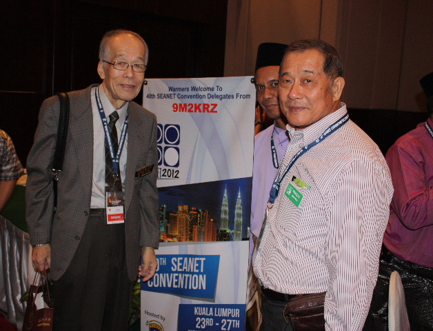
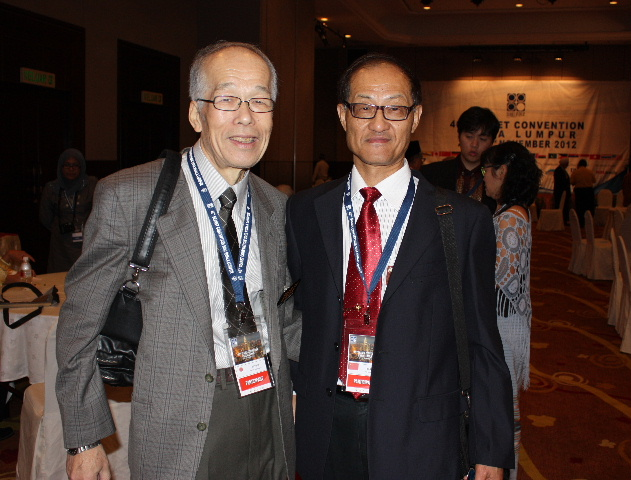
(L)JA1RJU.9M6GY/(R)JA1RJU.BA4HU
◎TOUR to「MAHA」
「MAHA」は2年ごとに行われているマレーシアの農業省によって主催されているアジア地域では最大の「農芸展覧会」です。
今年の「MAHAインターナショナル2012」は、2年前の「MAHAインターナショナル2010」の成功で基礎を築きました。
マレーシアの農民、漁師、牧畜業などの優良生産者が一般大衆に公開する博覧会です。
--------------------------------------------------------------------------------
●The MAHA Exposition biennial series is Malaysia's leading agricultural show.
Hosted by Ministry of Agriculture and Agro-Based Industries, it certainly is
amongst the largest and most comprehensive of its kind in the region, if not Asia.
MAHA International 2012 is expected to build on the success of MAHA International 2010.
A must for all industry stakeholders!
This year's show promise novel and technology centric exhibitions and activities that
interest trade visitors as well general public.
It is a show that flaunts Malaysia's best producers, farmer, fishermen and stockman.
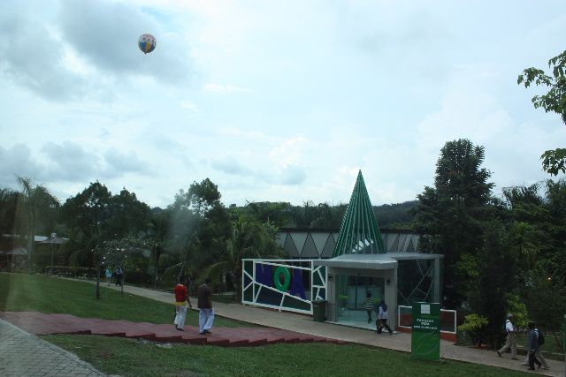
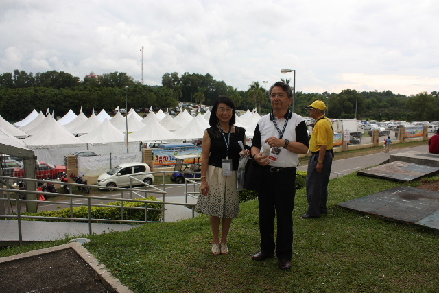
"MAHA(農芸展覧会)"を見学。地元の特産物が安く買える
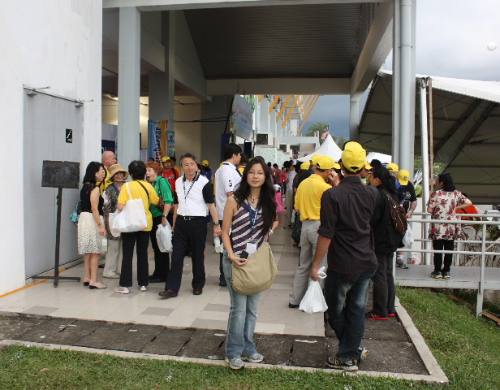
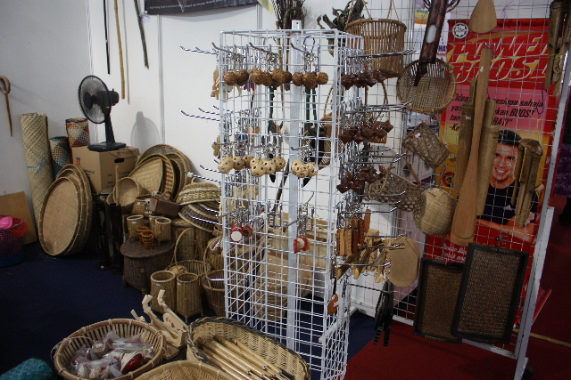
食料品から各種雑貨、手工芸の小物も盛りだくさん
|
 |
SEANET・2012 |

|